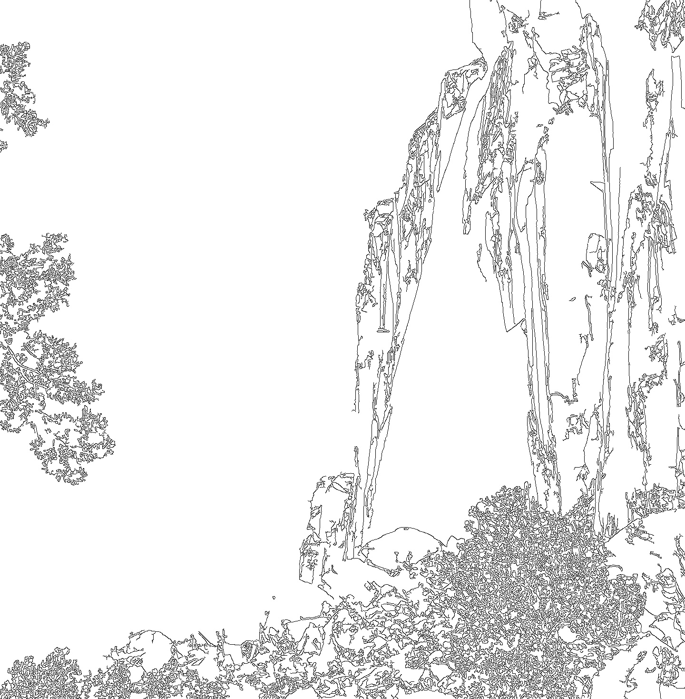

Standard Cartesian coordinates are commonly used to describe points in the plane. If we mention the point \((4,3)\text{,}\) we know that we arrive at this point from the origin by moving four units to the right and three units up.
Sometimes, however, it is more natural to work in a different coordinate system. Suppose that you live in the city whose map is shown in Figure3.2.1 and that you would like to give a guest directions for getting from your house to the store. You would probably say something like, "Go four blocks up Maple. Then turn left on Main for three blocks." The grid of streets in the city gives a more natural coordinate system than standard north-south, east-west coordinates.
Figure3.2.1.A city map.
In this section, we will develop the concept of a basis through which we will create new coordinate systems in \(\real^m\text{.}\) We will see that the right choice of a coordinate system provides a more natural way to approach some problems.
in \(\real^2\text{,}\) which are shown in Figure3.2.2.
Figure3.2.2.Linear combinations of \(\vvec_1\) and \(\vvec_2\text{.}\)
Indicate the linear combination \(\vvec_1 -
2\vvec_2\) on the figure.
Express the vector \(\twovec{-3}{0}\) as a linear combination of \(\vvec_1\) and \(\vvec_2\text{.}\)
Find the linear combination \(10\vvec_1 -
13\vvec_2\text{.}\)
Express the vector \(\twovec{16}{-4}\) as a linear combination of \(\vvec_1\) and \(\vvec_2\text{.}\)
Explain why every vector in \(\real^2\) can be written as a linear combination of \(\vvec_1\) and \(\vvec_2\) in exactly one way.
In the preview activity, we worked with a set of two vectors in \(\real^2\) and found that we could express any vector in \(\real^2\) in two different ways: in the usual way where the components of the vector describe horizontal and vertical changes, and in a new way as a linear combination of \(\vvec_1\) and \(\vvec_2\text{.}\) We could also translate between these two descriptions. This example illustrates the central idea of this section.
Subsection3.2.1Bases
In the preview activity, we created a new coordinate system for \(\real^2\) using linear combinations of a set of two vectors. More generally, the following definition will guide us.
Definition3.2.3.
A set of vectors \(\vvec_1,\vvec_2,\ldots,\vvec_n\) in \(\real^m\) is called a basis for \(\real^m\) if the set of vectors spans \(\real^m\) and is linearly independent.
Activity3.2.2.
We will look at some examples of bases in this activity.
In the preview activity, we worked with the set of vectors in \(\real^2\text{:}\)
Explain why the vectors \(\evec_1,\evec_2,\evec_3\) form a basis for \(\real^3\text{.}\)
If a set of vectors \(\vvec_1,\vvec_2,\ldots,\vvec_n\) forms a basis for \(\real^m\text{,}\) what can you guarantee about the pivot positions of the matrix
To be a basis, this set of vectors must span \(\real^m\) and be linearly independent.
We know that the span of the set of vectors is \(\real^m\) if and only if \(A\) has a pivot position in every row. We also know that the set of vectors is linearly independent if and only if \(A\) has a pivot position in every column. This means that a set of vectors forms a basis if and only if \(A\) has a pivot in every row and every column. Therefore, \(A\) must be row equivalent to the identity matrix \(I\text{:}\)
In addition to helping identify bases, this fact tells us something important about the number of vectors in a basis. Since the matrix \(A\) has a pivot position in every row and every column, it must have the same number of rows as columns. Therefore, the number of vectors in a basis for \(\real^m\) must be \(m\text{.}\) For example, a basis for \(\real^{23}\) must have exactly 23 vectors.
Proposition3.2.4.
A set of vectors forms a basis for \(\real^m\) if and only if the matrix
\begin{equation*}
A = \left[\begin{array}{rrrr}
\vvec_1 \amp \vvec_2 \amp \cdots \amp \vvec_n
\end{array}\right]
\sim I.
\end{equation*}
This means there must be \(m\) vectors in a basis for \(\real^m\text{.}\)
form the columns of the \(3\times3\) identity matrix, which implies that this set forms a basis for \(\real^3\text{.}\) More generally, the set of vectors \(\evec_1,\evec_2,\ldots,\evec_m\) forms a basis for \(\real^m\text{,}\) which we call the standard basis for \(\real^m\text{.}\)
Subsection3.2.2Coordinate systems
A basis for \(\real^m\) forms a coordinate system for \(\real^m\text{,}\) as we will describe. Rather than continuing to write a list of vectors, we will find it convenient to denote a basis using a single symbol, such as
which form a basis \(\bcal=\{\vvec_1,\vvec_2\}\) for \(\real^2\text{.}\)
In the standard coordinate system, the point \((2,-3)\) is found by moving 2 units to the right and 3 units down. We would like to define a new coordinate system where we interpret \((2,-3)\) to mean we move two times along \(\vvec_1\) and 3 times along \(-\vvec_2\text{.}\) As we see in the figure, doing so leaves us at the point \((1,-4)\text{,}\) expressed in the usual coordinate system.
The coordinates of the vector \(\xvec\) in the new coordinate system are the weights that we use to create \(\xvec\) as a linear combination of \(\vvec_1\) and \(\vvec_2\text{.}\)
Since we now have two descriptions of the vector \(\xvec\text{,}\) we need some notation to keep track of which coordinate system we are using. Because \(\twovec{1}{-4} = 2\vvec_1 - 3\vvec_2\text{,}\) we will write
More generally, \(\coords{\xvec}{\bcal}\) will denote the coordinates of \(\xvec\) in the basis \(\bcal\text{;}\) that is, \(\coords{\xvec}{\bcal}\) is the vector \(\twovec{c_1}{c_2}\) of weights such that
This demonstrates how we can translate coordinates in the basis \(\bcal\) into standard coordinates.
Suppose we know the expression of a vector \(\xvec\) in standard coordinates. How can we find its coordinates in the basis \(\bcal\text{?}\) For instance, suppose \(\xvec=\twovec{-8}{2}\) and that we would like to find \(\coords{\xvec}{\bcal}\text{.}\) We can write
This example illustrates how a basis in \(\real^2\) provides a new coordinate system for \(\real^2\) and shows how we may translate between this coordinate system and the standard one.
More generally, suppose that \(\bcal=\{\vvec_1,\vvec_2,\ldots,\vvec_m\}\) is a basis for \(\real^m\text{.}\) We know that the span of the vectors is \(\real^m\text{,}\) which implies that any vector \(\xvec\) in \(\real^m\) can be written as a linear combination of the vectors. In addition, we know that the vectors are linearly independent, which means that we can write \(\xvec\) as a linear combination of the vectors in exactly one way. Therefore, we have
If the coordinates of \(\xvec\) in the basis \(\bcal\) are \(\coords{\xvec}{\bcal} = \twovec{-2}{4}\text{,}\) what is the vector \(\xvec\text{?}\)
If \(\xvec = \twovec{3}{5}\text{,}\) find the coordinates of \(\xvec\) in the basis \(\bcal\text{;}\) that is, find \(\coords{\xvec}{\bcal}\text{.}\)
Find a matrix \(A\) such that, for any vector \(\xvec\text{,}\) we have \(\xvec = A\coords{\xvec}{\bcal}\text{.}\) Explain why this matrix is invertible.
Using what you found in the previous part, find a matrix \(B\) such that, for any vector \(\xvec\text{,}\) we have \(\coords{\xvec}{\bcal} = B\xvec\text{.}\) What is the relationship between the two matrices \(A\) and \(B\text{?}\) Explain why this relationship holds.
Find a matrix \(C\) that converts coordinates in the basis \(\ccal\) into coordinates in the basis \(\bcal\text{;}\) that is,
\begin{equation*}
\coords{\xvec}{\bcal} = C \coords{\xvec}{\ccal}\text{.}
\end{equation*}
You may wish to think about converting coordinates from the basis \(\ccal\) into the standard coordinate system and then into the basis \(\bcal\text{.}\)
This activity demonstrates how we can efficiently convert between coordinate systems defined by different bases. Lets consider a basis \(\bcal = \{\vvec_1,\vvec_2,\ldots,\vvec_m\}\) and a vector \(\xvec\text{.}\) We know that
where \(P_{\bcal} = \left[\begin{array}{rrrr}
\vvec_1 \amp \vvec_2 \amp \cdots \amp \vvec_m
\end{array}\right]\text{.}\) This means that the matrix \(P_{\bcal}\) converts coordinates in the basis \(\bcal\) into standard coordinates.
Since the columns of \(P_{\bcal}\) are the basis vectors \(\vvec_1,\vvec_2,\ldots,\vvec_m\text{,}\) we know that \(P_{\bcal}
\sim I_m\text{,}\) and \(P_{\bcal}\) is therefore invertible. Since we have
If we have another basis \(\ccal\text{,}\) we find, in the same way, that \(\xvec = P_{\ccal}\coords{\xvec}{\ccal}\) for the conversion between coordinates in the basis \(\ccal\) into standard coordinates. We then have
It is relatively straightforward to convert a vectors representation in this basis into to the standard basis using the matrix whose columns are the basis vectors:
For example, suppose that the vector \(\xvec\) is described in the coordinate system defined by the basis as \(\coords{\xvec}{\bcal} = \threevec{2}{-2}{1}\text{.}\) We then have
Consider now the vector \(\xvec=\threevec{3}{1}{-2}\text{.}\) If we would like to express \(\xvec\) in the coordinate system defined by \(\bcal\text{,}\) then we compute
The average revenue for the first two quarters is 11.7, which is 1.925 million dollars above the yearly average. Similarly, the average revenue for the last two quarters is 1.925 million dollars below the yearly average. This is recorded by the second term
Finally, the first quarters revenue is 1.400 million dollars below the average over the first two quarters and the second quarters revenue is 1.400 million dollars above that average. This, and the corresponding data for the last two quarters, is captured by the last two terms:
If we write \(\coords{\xvec}{\bcal} =
\fourvec{c_1}{c_2}{c_3}{c_4}\text{,}\) we see that the coefficient \(c_1\) measures the average revenue over the year, \(c_2\) measures the deviation from the annual average in the first and second halves of the year, and \(c_3\) measures how the revenue in the first and second quarter differs from the average in the first half of the year. In this way, the coefficients provide a view of the revenue over different time scales, from an annual summary to a finer view of quarterly behavior.
This basis is sometimes called a Haar wavelet basis, and the change of basis is known as a Haar wavelet transform. In the next section, we will see how this basis provides a useful way to store digital images.
Activity3.2.4.Edge detection.
An important problem in the field of computer vision is to detect edges in a digital photograph, as is shown in Figure3.2.12. Edge detection algorithms are useful when, say, we want a robot to locate an object in its field of view. Graphic designers also use these algorithms to create artistic effects.

Figure3.2.12.A canyon wall in Capitol Reef National Park and the result of an edge detection algorithm.
We will consider a very simple version of an edge detection algorithm to give a sense of how this works. Rather than considering a two-dimensional photograph, we will think about a one-dimensional row of pixels in a photograph. The grayscale values of a pixel measure the brightness of a pixel; a grayscale value of 0 corresponds to black, and a value of 255 corresponds to white.
Suppose, for simplicity, that the grayscale values for a row of six pixels are represented by a vector \(\xvec\) in \(\real^6\text{:}\)
We can easily see that there is a jump in brightness between pixels 4 and 5, but how can we detect it computationally? We will introduce a new basis \(\bcal\) for \(\real^6\) with vectors:
Construct the matrix \(P_\bcal\) that relates the standard coordinate system with the coordinates in the basis \(\bcal\text{.}\)
Determine the matrix \(P_\bcal^{-1}\) that converts the representation of \(\xvec\) in standard coordinates into the coordinate system defined by \(\bcal\text{.}\)
Suppose the vectors are expressed in general terms as
Using the relationship \(\coords{\xvec}{\bcal} =
P_{\bcal}^{-1}\xvec\text{,}\) determine an expression for the coefficient \(c_2\) in terms of \(x_1,x_2,\ldots,x_6\text{.}\) What does \(c_2\) measure in terms of the grayscale values of the pixels? What does \(c_4\) measure in terms of the grayscale values of the pixels?
determine the representation of \(\xvec\) in the \(\bcal\)-coordinate system.
Explain how the coefficients in \(\coords{\xvec}{\bcal}\) determine the location of the jump in brightness in the grayscale values represented by the vector \(\xvec\text{.}\)
Readers who are familiar with calculus may recognize that this change of basis converts a vector \(\xvec\) into \(\coords{\xvec}{\bcal}\text{,}\) the set of changes in \(\xvec\text{.}\) This process is similar to differentiation in calculus. Similarly, the process of converting \(\coords{\xvec}{\bcal}\) into the vector \(\xvec\) adds together the changes in a process similar to integration. As a result, this change of basis represents a linear algebraic version of the Fundamental Theorem of Calculus.
Subsection3.2.4Summary
We defined a basis to be a set of vectors \(\bcal =
\{\vvec_1,\vvec_2,\ldots,\vvec_n\}\) that is linearly independent and whose span is \(\real^m\text{.}\)
A set of vectors forms a basis for \(\real^m\) if and only if the matrix
This means there must be \(m\) vectors in a basis for \(\real^m\text{.}\)
If \(\vvec_1,\vvec_2,\ldots,\vvec_m\) forms a basis for \(\real^m\text{,}\) then any vector in \(\real^m\) can be written as a linear combination of the vectors in exactly one way.
We used the basis \(\bcal\) to define a coordinate system in which \(\coords{\xvec}{\bcal} = \cfourvec{c_1}{c_2}{\vdots}{c_n}
\text{,}\) the coordinates of \(\xvec\) in the basis \(\bcal\text{,}\) are defined by
Explain why \(\bcal=\{\vvec_1,\vvec_2,\vvec_3,\vvec_4\}\) forms a basis for \(\real^4\text{.}\)
Explain how to convert \(\coords{\xvec}{\bcal}\text{,}\) the representation of a vector \(\xvec\) in the coordinates defined by \(\bcal\text{,}\) into \(\xvec\text{,}\) its representation in the standard coordinate system.
Explain how to convert the vector \(\xvec\) into \(\coords{\xvec}{\bcal}\text{,}\) its representation in the coordinate system defined by \(\bcal\text{.}\)
If \(\xvec=\fourvec{23}{12}{10}{19}\text{,}\) find \(\coords{\xvec}{\bcal}\text{.}\)
If \(\coords{\xvec}{\bcal}=\fourvec{3}{1}{-3}{-4}\text{,}\) find \(\xvec\text{.}\)
4.
Consider the following vectors in \(\real^3\text{:}\)
Explain why \(\bcal=\{\vvec_1,\vvec_2,\vvec_3\}\) is a basis for \(\real^3\text{.}\) Notice that you may enter \(\cos\left(\frac\pi6\right)\) into Sage as cos(pi/6).
If \(\xvec=\threevec{15}{15}{15}\text{,}\) find \(\coords{\xvec}{\bcal}\text{.}\)
Find the matrices \(P_{\bcal}\) and \(P_{\bcal}^{-1}\text{.}\) If \(\xvec=\threevec{x_1}{x_2}{x_3}\) and \(\coords{\xvec}{\bcal} = \threevec{c_1}{c_2}{c_3}\text{,}\) explain why \(c_1\) is the average of \(x_1\text{,}\)\(x_2\text{,}\) and \(x_3\text{.}\)
6.
Determine whether the following statements are true or false and provide a justification for your response.
If the columns of a matrix \(A\) form a basis for \(\real^m\text{,}\) then \(A\) is invertible.
There must be 125 vectors in a basis for \(\real^{125}\text{.}\)
If \(\bcal=\{\vvec_1,\vvec_2,\ldots,\vvec_n\}\) is a basis of \(\real^m\text{,}\) then every vector in \(\real^m\) can be expressed as a linear combination of basis vectors.
The coordinates \(\coords{\xvec}{\bcal}\) are the weights that form \(\xvec\) as a linear combination of basis vectors.
If the basis vectors form the columns of the matrix \(P_{\bcal}\text{,}\) then \(\coords{\xvec}{\bcal} =
P_{\bcal}\xvec\text{.}\)
7.
Provide a justification for your response to each of the following questions.
Suppose you have \(m\) linearly independent vectors in \(\real^m\text{.}\) Can you guarantee that they form a basis of \(\real^m\text{?}\)
If \(A\) is an invertible \(m\times m\) matrix, do the columns necessarily form a basis of \(\real^m\text{?}\)
Suppose we have an invertible \(m\times m\) matrix \(A\text{,}\) and we perform a sequence of row operations on \(A\) to form a matrix \(B\text{.}\) Can you guarantee that the columns of \(B\) form a basis for \(\real^m\text{?}\)
Suppose you have a set of 10 vectors in \(\real^{10}\) and that every vector in \(\real^{10}\) can be written as a linear combination of these vectors. Can you guarantee that this set of vectors is a basis for \(\real^{10}\text{?}\)
8.
Crystallographers find it convenient to use coordinate systems that are adapted to the specific geometry of a crystal. As a two-dimensional example, consider a layer of graphite in which carbon atoms are arranged in regular hexagons to form the crystalline structure shown in Figure3.2.14.
Figure3.2.14.A layer of carbon atoms in a graphite crystal.
The origin of the coordinate system is at the carbon atom labeled by 0. It is convenient to choose the basis \(\bcal\) defined by the vectors \(\vvec_1\) and \(\vvec_2\) and the coordinate system it defines.
Locate the points \(\xvec\) for which
\(\coords{\xvec}{\bcal} = \twovec{1}{0}\text{,}\)
\(\coords{\xvec}{\bcal} = \twovec{0}{1}\text{,}\)
\(\coords{\xvec}{\bcal} =
\twovec{2}{1}\text{.}\)
Find the coordinates \(\coords{\xvec}{\bcal}\) for all the carbon atoms in the hexagon whose lower left vertex is labeled 0.
What are the coordinates \(\coords{\xvec}{\bcal}\) of the center of that hexagon, which is labeled C?
How do the coordinates of the atoms in the hexagon whose lower left corner is labeled 1 compare to the coordinates in the hexagon whose lower left corner is labeled "0"?
Does the point \(\xvec\) whose coordinates are \(\coords{\xvec}{\bcal} = \twovec{16}{4}\) correspond to a carbon atom or the center of a hexagon?
9.
Suppose that \(A=\left[\begin{array}{rr} 2 \amp 1 \\ 1\amp
2 \\ \end{array}\right]\) and
Explain why \(\bcal=\{\vvec_1,\vvec_2\}\) is a basis for \(\real^2\text{.}\)
Find \(A\vvec_1\) and \(A\vvec_2\text{.}\)
Use what you found in the previous part of this problem to find \(\coords{A\vvec_1}{\bcal}\) and \(\coords{A\vvec_2}{\bcal}\text{.}\)
If \(\coords{\xvec}{\bcal} = \twovec{1}{-5}\text{,}\) find \(\coords{A\xvec}{\bcal} \text{.}\)
Find a matrix \(D\) such that \(\coords{A\xvec}{\bcal} =
D\coords{\xvec}{\bcal}\text{.}\)
You should find that the matrix \(D\) is a very simple matrix, which means that this basis \(\bcal\) is well suited to study the effect of multiplication by \(A\text{.}\) This observation is the central idea of the next chapter.